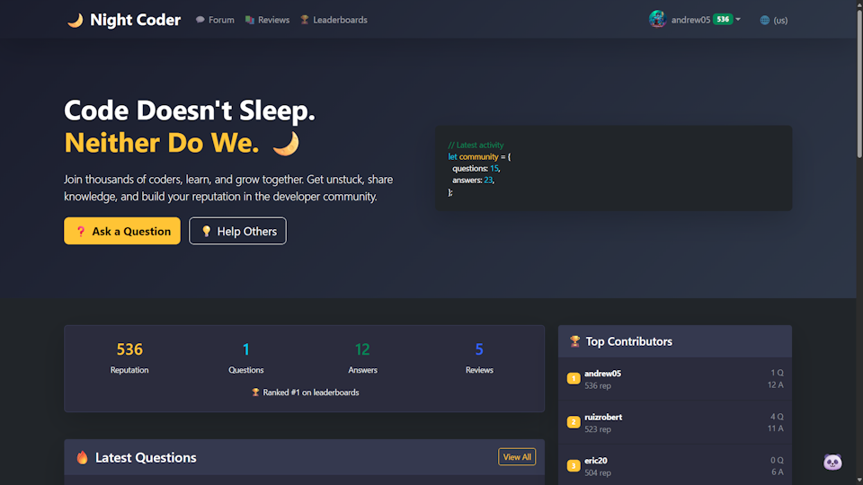
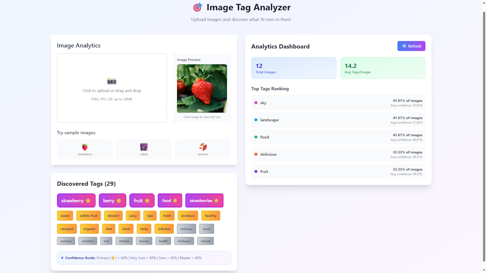

Hey, I'm Kirill Tarasof 👋
Backend-Focused Full-Stack Developer · Warsaw, Poland
Specialize in Python (FastAPI/Django), microservices, and
Docker/Kubernetes.
Proven track record of optimizing API performance (30% faster responses) and building scalable
systems.
Fluent in English (B2), open to remote worldwide.
About
I'm a backend-focused full-stack developer with 5+ years of experience designing and deploying robust applications. I specialize in Python (FastAPI/Django), microservices architecture, and containerization (Docker/Kubernetes). I'm passionate about clean code, system reliability, and solving complex technical challenges.
I studied Computer Science at the University of Łódź (2018–2020) and have since worked on a variety of projects — from high-load microservices and Web3 platforms to human rights documentation websites. I'm a strong cross-functional collaborator, focused on code quality and reliable deliveries.
Currently deepening my knowledge in:
- Advanced SQL & query optimisation
- AuthN/AuthZ patterns (OAuth2, JWT)
- Kubernetes operators & helm
- Web3 integration with MERN
Tech Stack
Languages
Frameworks
DevOps
Databases
Tools
Projects & freelance work

⚖️ RDE (human rights) — Django
Built and deployed rdeaps.com, a human rights organisation website. Custom admin for publications/documents, filtering + search, fully responsive. Managed Linux VPS with 99.5% uptime.

₿ MEHHC – MERN Web3 Platform
Cryptocurrency management platform (client: Emma O, Canada). Supports 10+ coins, cross-chain interactions, real-time fees, APY tracking, and Web3 wallet authentication (MetaMask/WalletConnect). 30% faster API, 99.9% uptime on AWS with CI/CD.

🌙 Night Coder Forum
A developer community forum with auth, reputation, Q&A and reviews sections. Practiced Django, REST API, CRUD operations, CI/CD (linting and testing) and SOLID principles.

🖼️ Image Tag Analyzer
Service for extracting tags from images with AI. API Gateway + 3 microservices + PostgreSQL + Redis + Frontend. Practiced FastAPI, I/O bound tasks, external service integration.
Work Experience
Backend Developer (Python / Microservices) · YouTeam
Remote, Worldwide
- Engineered and deployed 3+ high-load microservices (scheduling, post feed, notifications) using async FastAPI, achieving 99.9% uptime and supporting 500+ daily active users with <200ms response times.
- Containerized applications with Docker and contributed to 15+ Kubernetes manifests, cutting deployment failures by 30% and reducing infrastructure costs by an estimated 20%.
- Architected API contracts in collaboration with Frontend and DevOps teams, reducing integration errors by 15% and accelerating feature delivery by 2 weeks per sprint.
- Enforced Git workflows and code reviews, maintaining 90%+ test coverage and reducing production bugs by 25%.
Frontend Developer (JavaScript / React) · Straż Wodna
Remote, Poland
- Developed responsive UIs with React functional components and integrated 10+ RESTful APIs using Axios, improving page load speed by 30% through optimized state management.
- Implemented comprehensive error handling and loading states, reducing user-reported frontend issues by 30% and ensuring seamless cross-browser compatibility across 5+ browsers.
- Configured docker-compose and Nginx for local development and production deployment, cutting environment setup time for new developers by 40%.
Full-Stack Developer (MERN / Web3) · Freelance for Emma O, Canada
MEHHC Platform
- Built MEHHC, a multicoin transfer platform supporting 10+ cryptocurrencies with real-time fee estimation and blockchain integration via MetaMask/WalletConnect.
- Optimized API response times by 30% through caching strategies and database query optimization, serving 1,000+ monthly active users.
- Deployed on AWS with CI/CD (GitHub Actions), maintaining 99.9% uptime and reducing deployment time from hours to under 10 minutes.
Full-Stack Developer (Python / Django) · Freelance for RDE, Slovenia
rdeaps.com
- Developed and deployed a human rights documentation website using Django, building a custom admin interface for non-technical staff to manage 1,000+ legal documents.
- Designed a document filtering and search system with PostgreSQL full-text search, reducing document retrieval time by 50% for end users.
- Managed Linux VPS (Nginx, Gunicorn, PostgreSQL), handling DNS and SSL configuration, achieving 99.5% uptime with proactive monitoring and regular security updates.
University of Łódź, Poland
Computer Science – completed coursework towards Bachelor's degree
Contact me
Fluent in English (B2) · Open to remote worldwide · Python · FastAPI · Django · Kubernetes